15 Champions.
One Title.
Fifteen city champions from the East Coast to Hawaii earned their spot through local and regional battles across 20+ cities. Over three nights at Hofbräuhaus Las Vegas, they competed for national bragging rights, a $5,000 prize and the title of Chef Battle National Champion.
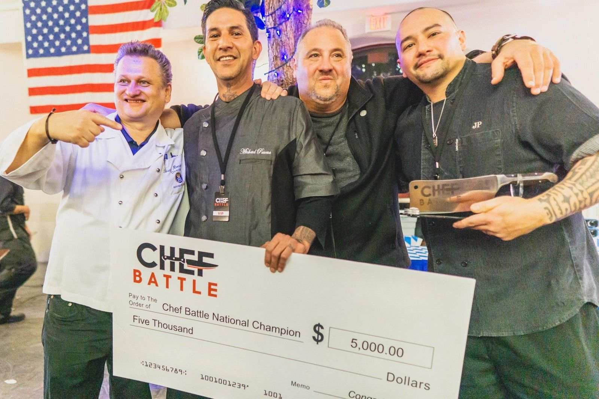
Mike Pascua.
Mike Pascua battled through local competition in Orange County, earned his spot at Nationals, and outcooked 14 other city champions across three nights in Las Vegas to claim the title and the $5,000 prize.
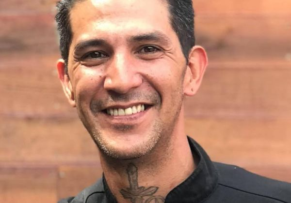
From City Champions to a National Stage.
Chef Battle had spent years building a multi-city competition circuit: local battles across the country, each producing a champion. The question was always what happens next.
Nationals called for a three-night, tournament-style event that honored what these chefs had accomplished, on a stage worthy of a national championship. Hofbräuhaus Las Vegas, one of the most recognizable dining venues in the city, became the host partner.
Chefs battled with limited equipment, limited ingredients and limited time, each with one sous chef. Dishes were judged on appearance, creativity and taste, with the crowd casting votes too.
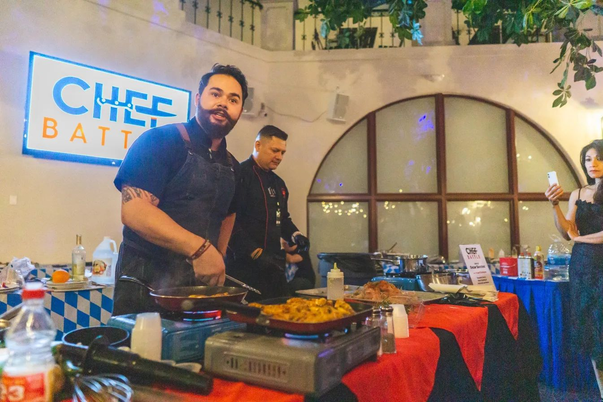
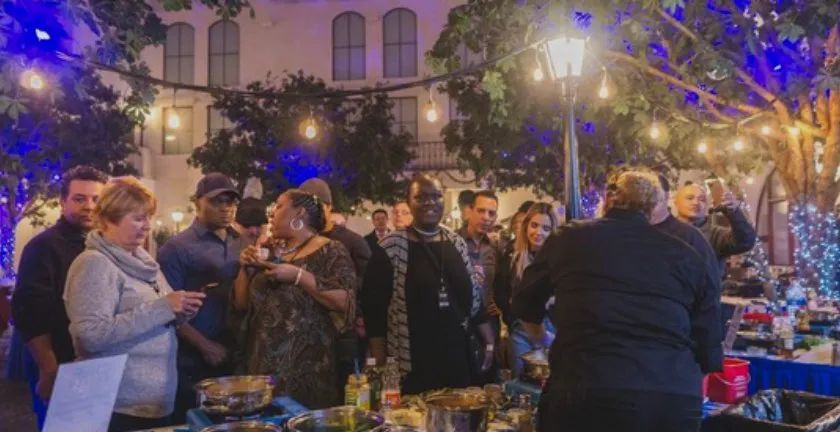
Three Nights. One Champion.
A tournament built for drama, fairness and spectacle, with a host each night matched to the stakes.
8 chefs. One hour to create their best dish for the judges, then bites for the crowd. Judges score, crowd votes.
Hosted by Michael Politz, Founder & Editor-in-Chief, Food & Beverage Magazine
7 chefs. Same format, same pressure. A tied score advanced 4 chefs to the finals instead of 3.
Hosted by Michael Politz, Food & Beverage Magazine
7 finalists. One title. One chef walks away as the Chef Battle National Champion.
Hosted by Shaun O'Neale, MasterChef Season 7 Winner
The Competitors.
Every chef earned their place through local and regional battles. These weren't contestants. They were already champions.
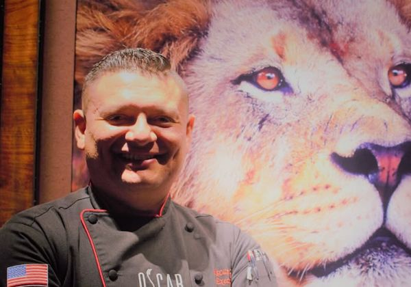
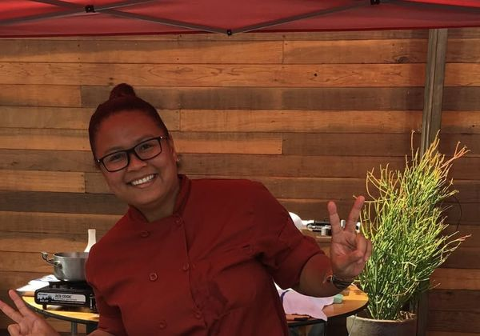
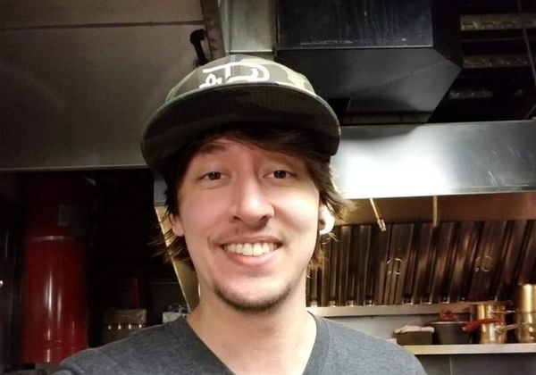
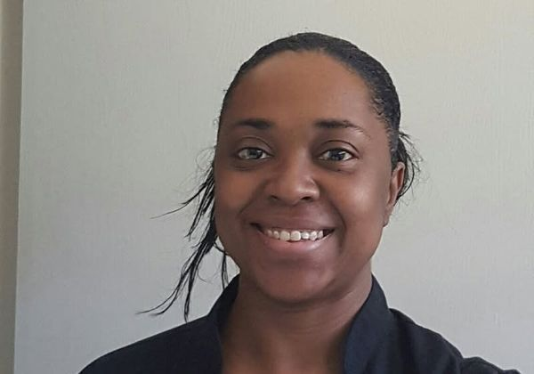
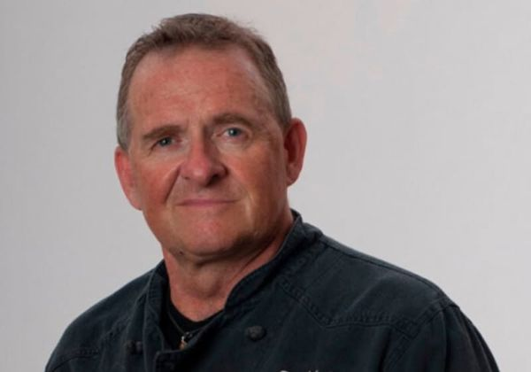
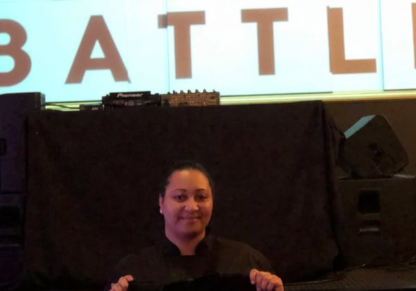
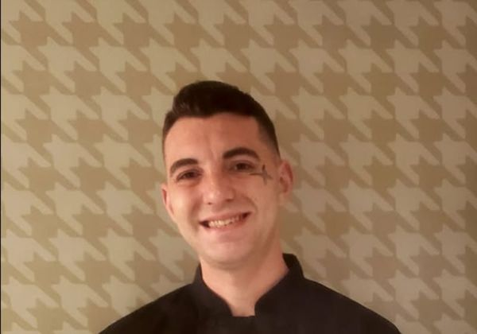
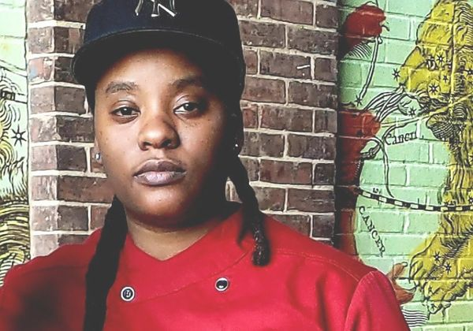
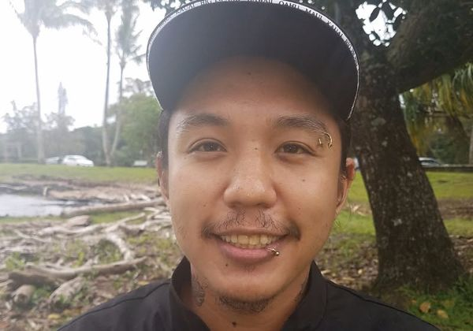
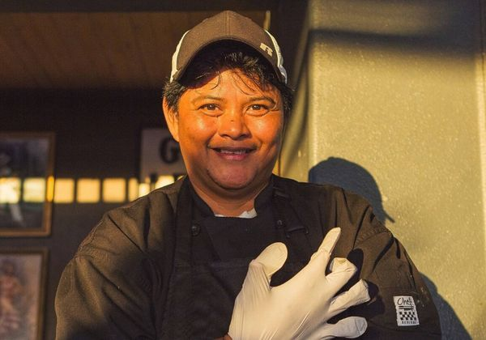
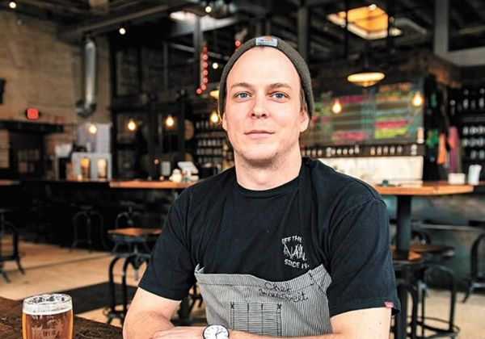
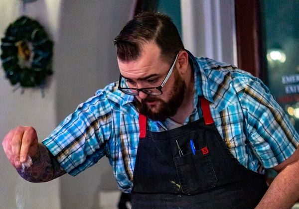
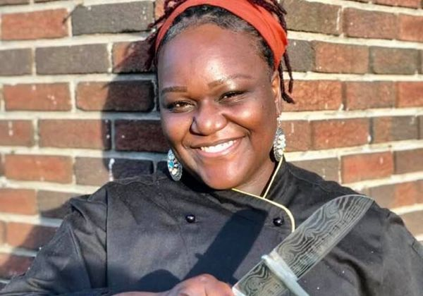
The Hosts.
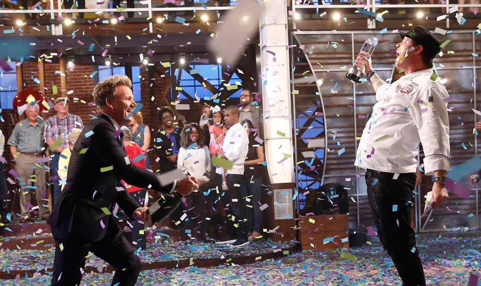
Shaun O'Neale won MasterChef Season 7 under Gordon Ramsay, beating out tens of thousands of home cooks to claim one of the most coveted titles in culinary television. A DJ-turned-chef, Shaun brought relentless creativity and technical precision to every dish, and the same energy to the Nationals finals stage.
Michael Politz founded Food & Beverage Magazine, the go-to source for behind-the-scenes news in restaurants and hospitality, read by 12 million people a month. Snarky, sarcastic and always in the know, he brought a seasoned industry lens to the preliminary rounds.
Beyond the Venue.
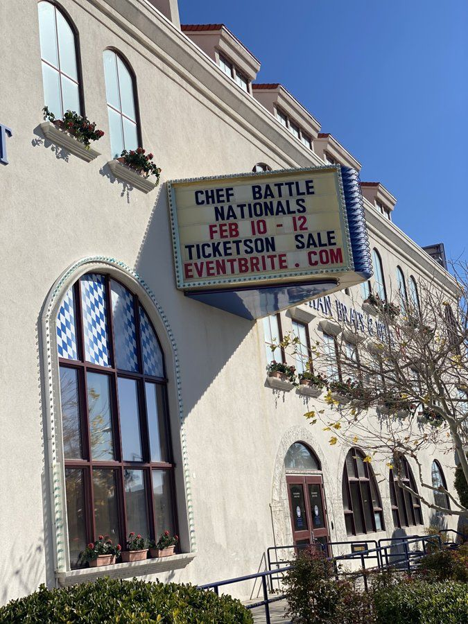
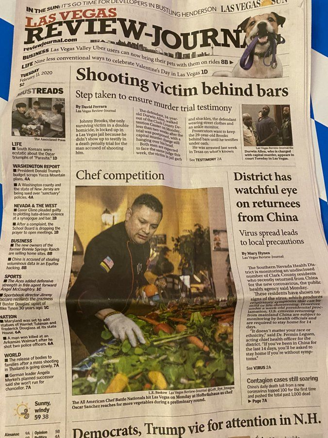
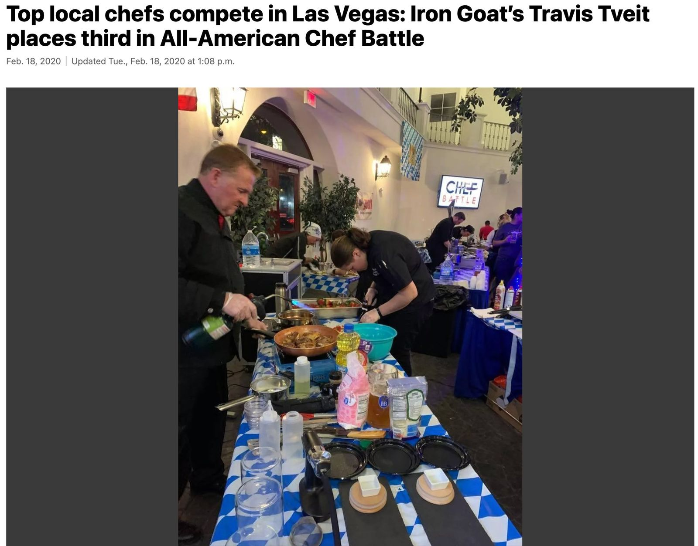
Local media in competing cities followed their chefs to Las Vegas, and Food & Beverage Magazine carried national trade coverage to 12 million monthly readers. Not paid placement. Earned media. Chef Battle was the story.
Who Made It Possible.
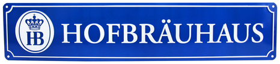
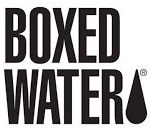
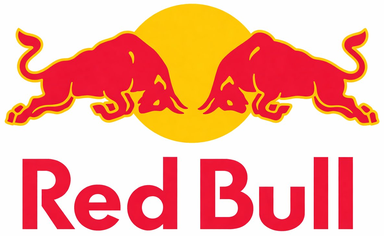
Ready to Host the Next One?
Chef Battle Nationals is coming back. If you're interested in sponsoring, hosting, or bringing Chef Battle to your city, let's talk. Chefs: become a League Chef to start your road to the next national stage.